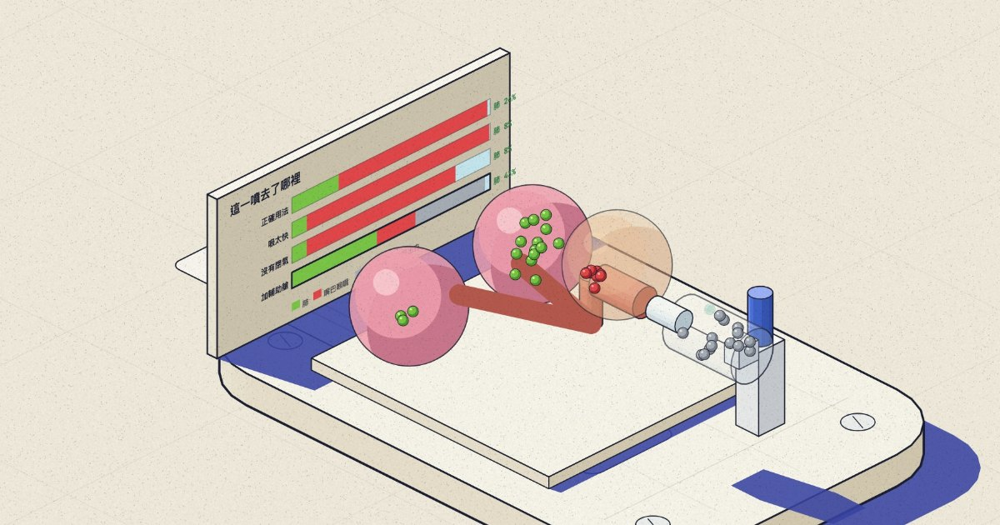
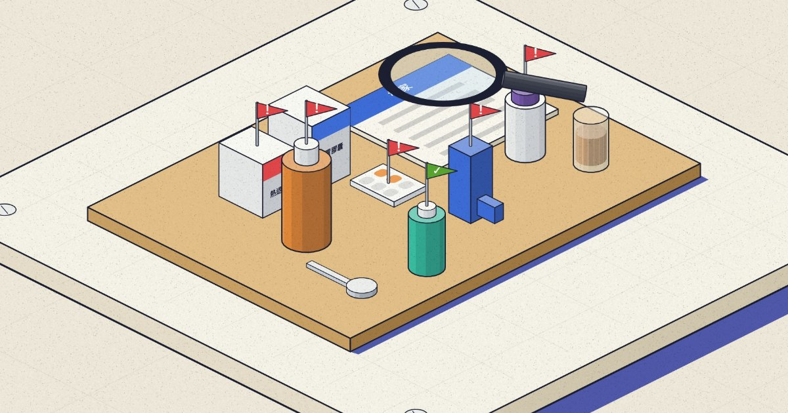

學習路線/階段 6
階段 6 / 6，第 11–12 週
用藥安全實戰
你的目標：把前面五個階段學到的，用在生活裡最常見的用藥問題上，最後完成一次完整的藥袋大會診。
很多用藥問題不是藥本身，而是怎麼吃、怎麼放、怎麼用：抗生素覺得好了就停、藥放在潮濕的浴室、吸入劑吸太快。這個階段先看這三個最常見的錯誤，最後用一位病人的藥袋，把六個階段的重點全部串起來。
本階段的 Lab

Lab 01 新
抗生素為什麼要照療程吃
第 2 天就不難受了，細菌卻還沒清完。提早停、常常漏吃會留下比較耐藥的細菌；拿抗生素治病毒感冒則完全沒用。

Lab 02 新
藥放錯地方：熱、濕、過期
有效期限是「照標示存放」才算數的保證。放在浴室、該冷藏卻放室溫，藥可能提早變弱；過期的藥拿去回收。

Lab 03 新
吸入劑：用對方法，藥才到得了肺
吸太快、沒有閉氣，藥大多留在喉嚨或又呼出來；接上輔助艙，到肺的多、嘴裡的少。用完記得漱口。

Lab 04 新
期末挑戰：林家的藥櫃大會診
15 張卡片、12 個問題，每一個都來自前面的一個階段，也有幾件其實做得很好。你找得到幾個？
要學什麼
- 抗生素療程覺得好了不代表細菌清光；照醫師開的吃，不自己停、不漏吃、不吃剩的。（Lab 01）
- 藥的保存熱、濕、光會讓藥變弱；有效期限和保存方式為什麼重要。（Lab 02）
- 特殊劑型的用法吸入劑要慢慢吸、閉氣，必要時用輔助艙。（Lab 03）
- 綜合運用從一位病人的藥袋找出問題，用上六個階段的知識。（Lab 04）
看到不熟的詞，可以查本頁的名詞表。
常見錯誤
把上次沒吃完的抗生素留著，下次感冒再拿出來吃。感冒大多是病毒，抗生素沒有用；就算是細菌感染，剩下的藥量和種類也不一定對。剩下的藥請拿到藥局回收，不要自己留著用或給別人吃。
練習
打開家裡的藥櫃，做一次小盤點：每一樣藥寫下名稱、有效期限、放在哪裡、仿單或藥袋上寫的保存方式（室溫、冷藏、避光），以及現在還有沒有在吃。過期的、沒在吃的、上次剩下的抗生素，拿到藥局回收。看不懂保存方式的，問藥師。
| 藥品 | 示範抗生素 A 膠囊（虛構） |
| 有效期限 | 2027 年 3 月 |
| 放在哪裡 | 浴室鏡櫃（潮濕） |
| 還有在吃嗎 | 沒有，上次感染剩下的 4 顆 |
| 我的處理 | 剩下的抗生素拿去藥局回收；其他藥移到乾燥、陰涼、小孩拿不到的地方。 |
名詞表
抗生素
用來治療細菌感染的藥。對病毒（例如大多數感冒）沒有作用。
抗藥性
細菌變得不怕某種抗生素，同樣的藥殺不死它。不當使用抗生素會讓抗藥的細菌變多。
療程
醫師開的用藥天數和次數。長短依感染種類和病人狀況決定。
有效期限
在建議的保存方式下，藥能維持品質和效果的期限。
輔助艙（spacer）
接在定量噴霧吸入劑上的透明管子，讓藥霧先停在裡面，比較容易慢慢吸進肺裡。
完成這個階段後，你應該能夠
0 / 7
你的進度保存在這個瀏覽器裡。
結業：你走完了從零開始學藥
六個階段，從一顆藥裡有什麼，一路到藥怎麼在身體裡走、怎麼作用、為什麼會有副作用和交互作用、特殊族群為什麼要小心，最後是生活裡的用藥安全。回頭看看每個階段的檢核清單，還有沒勾的，就是下一次可以複習的地方。
- 階段 1：藥是什麼劑型、成分、學名與商品名、看懂藥袋。
- 階段 2：藥進入身體後吸收、分布、代謝、排除，半衰期與一天吃幾次。
- 階段 3：藥怎麼作用受體、劑量反應、治療指數、耐受性。
- 階段 4：副作用與交互作用副作用的來源、酵素抑制與誘導、效果疊加。
- 階段 5：特殊族群小孩、長輩、懷孕、哺乳。
- 階段 6：用藥安全實戰抗生素、保存、吸入劑，以及藥袋大會診。
接下來可以：讀一份自己常用藥品的仿單，用學到的詞找出重點；下次拿藥時，問藥師一個你現在會問的問題。學藥最好的老師，常常就在藥局櫃檯後面。